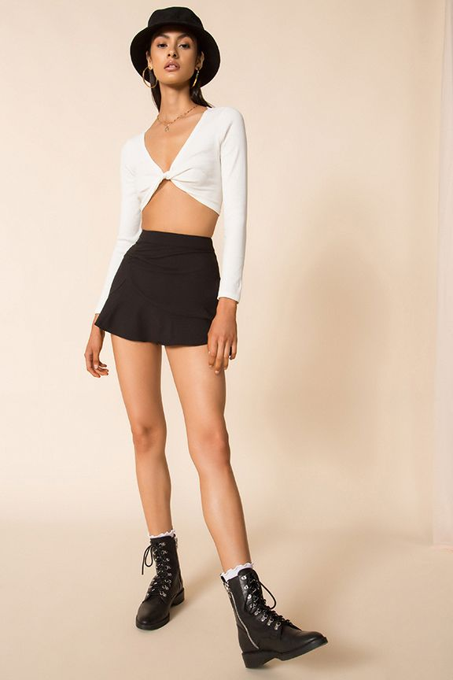
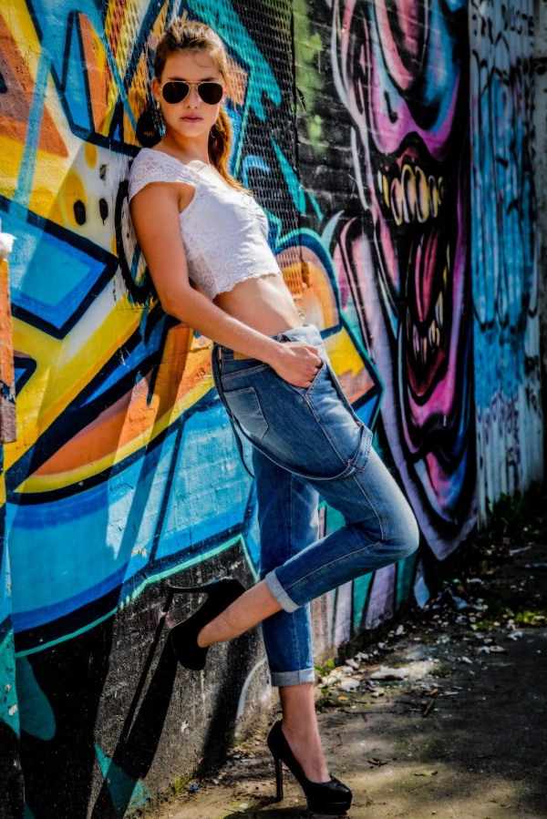
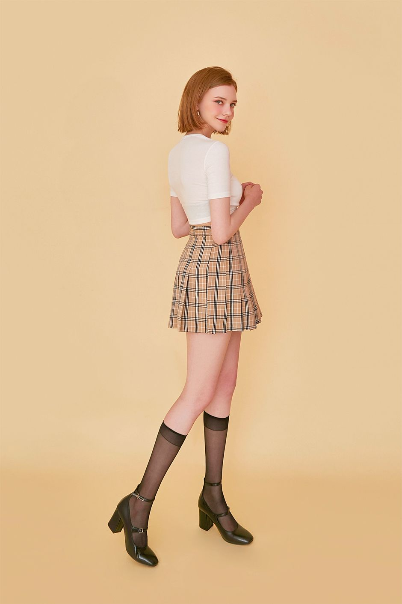

Basic Posing Guides
Standing Poses
The right pose in the right circumstances can make all the difference, particularly when photographing for fashion or advertising.

Standing Pose
A simple and casual looking pose. Lots of variations are possible. Ask the model to twist her body, experiment with hand positioning and try different head turns. Try tilting your chin in different directions and practice at home to see what your best angle is. As a photographer, Have the model look over her shoulder. Note how unusual and interesting a portrait might look, if shot simply from a different angle.

Leaning on the wall pose
A relaxed pose with the model standing upright and supporting her back against a wall. Remember that the model may use a wall not only to support her back, but also to put her hands on, or resting a leg against it. The model can lean flat against the wall or slightly angled towards the camera.Ensure that the pose looks as natural as possible.Watch placement of her arms and legs.

Side standing pose
Let her lose her shoes and ask her to walk slowly. Walk and take your shots slightly from behind. The nearest knee to the camera should always be bent so that weight is shifted away from the camera to allow for a beautiful body shape.During a full-length shot, watch the placement of legs with one knee bent so that weight is shifted away from the camera.Place her hands on her hips or play with different options, always ensuring light is flowing around the model.